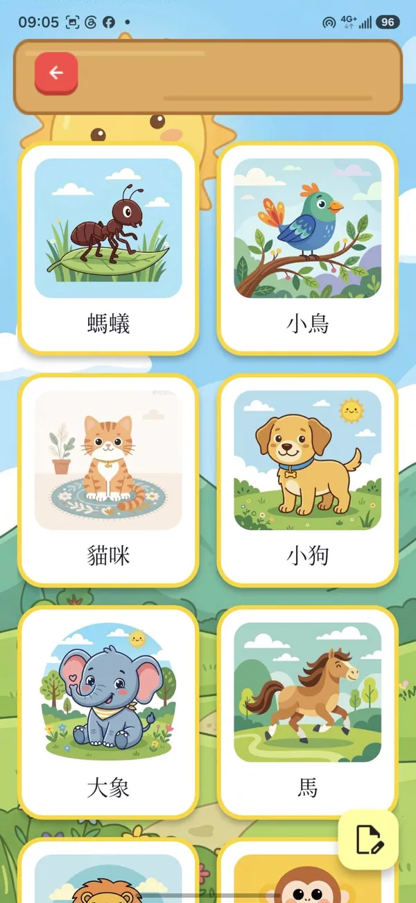
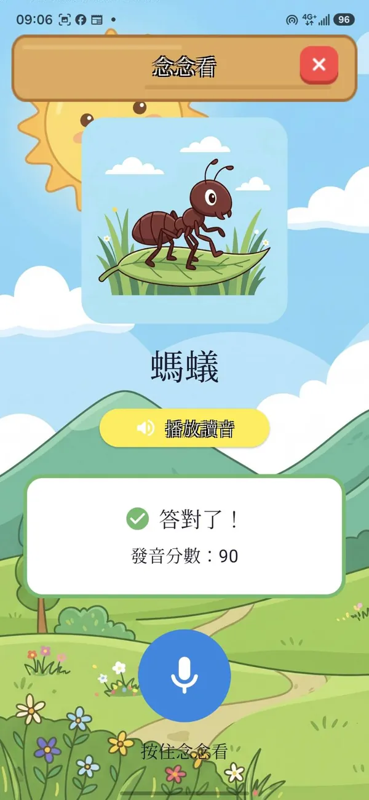
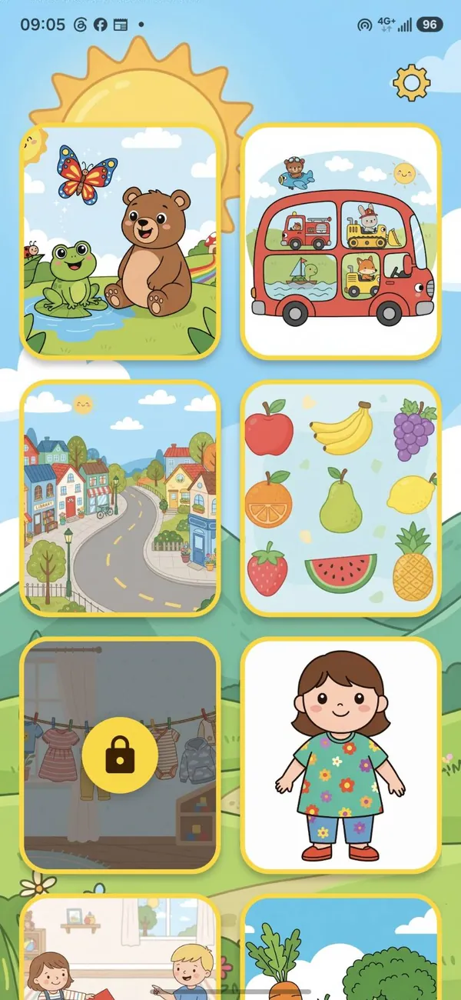
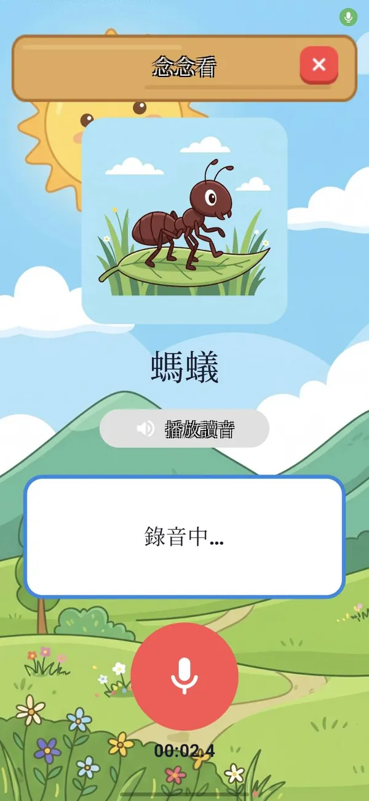
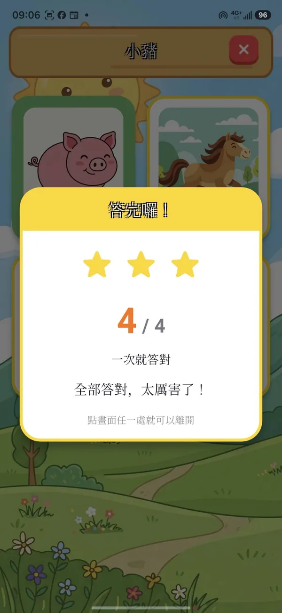

為孩子設計
為 2–3 歲幼兒設計的每個細節
-
一次一張大圖卡
畫面乾淨，孩子不會分心。
-
只有點一下和按住
還不會認字，也能自己玩。
-
念錯不責備
只會說「再念一次看看」，害羞的孩子也敢開口。
-
想念幾次都可以
每個詞都能重複聽、重複念，沒有次數限制。
讓孩子自己
愛上開口說話
看圖卡、聽發音、跟著念。按住麥克風念一次，放開手就看到發音分數，念錯也只會聽到「再念一次看看」。


怎麼玩

動物、交通工具、水果、蔬菜、顏色、身體……挑一個孩子喜歡的開始。

點圖卡聽發音，按住麥克風跟著念，放開手就給發音分數。

小測驗把剛學的詞找出來，全部答對拿三顆星。
為孩子設計
畫面乾淨，孩子不會分心。
還不會認字，也能自己玩。
只會說「再念一次看看」，害羞的孩子也敢開口。
每個詞都能重複聽、重複念，沒有次數限制。
家長放心
App 裡沒有任何第三方廣告，不會有東西跳出來打斷孩子。
設定和訂閱擋在一道算數題後面，孩子自己點不進去。
沒有帳號、不用登入，不蒐集姓名、生日或任何個人資料。
只有按住按鈕時才錄音，評分完立刻刪除，我們不留存任何錄音。
學什麼
從兒童身邊看得到、摸得到的東西開始認識詞彙、練習發音，主題陸續增加中。
多國語言
在設定裡換語言，圖卡的詞、發音示範和評分都會跟著換。想讓孩子練英文發音，換成 English 就可以。
FAQ
一般字卡多半只能看圖、聽發音。童語萌芽多了「念念看」：孩子按住麥克風念一次，App 會聽、會給發音分數，念完馬上知道自己念對了沒，也就更願意一直開口練習。
以 2–3 歲剛開始學說話的幼兒為主。大一點的兒童，或正在學英文的孩子，也可以拿來認識新詞、練習發音。
可以。先點圖卡聽發音，等孩子願意了再按住麥克風念念看。圖卡一次一張、每個詞都能重複聽，念錯也只會聽到「再念一次看看」。不過這是陪孩子練習開口的小遊戲，不是語言治療工具；每個孩子開口的時間不一樣，如果擔心孩子的語言發展，請諮詢小兒科醫師或語言治療師。
可以。在設定裡把語言換成 English，圖卡的詞、發音示範和評分就會變成英文（App 介面也會一起換成英文）。也可以換成西班牙文或韓文。
孩子念完，App 會用語音辨識比對正確的發音，給出 0–100 的發音分數，達到及格分數就算念對。家長可以在設定裡調整「發音評分難度」：簡單（40 分）、中等（60 分，預設）、高級（80 分），剛開始學說話的孩子可以從簡單開始。
App 免費下載。動物、交通工具、城市街道、水果這四個主題免費，可以完整玩「念念看」和「找找看」；其他主題要訂閱才能解鎖，訂閱也包含之後新增的主題。有月費和年費方案，價格以 App 內顯示為準。
「念念看」的發音評分需要網路。每個主題的圖卡和聲音第一次打開時會下載，之後就存在裝置上。
不會。只有按住麥克風時才錄音（單次最長 10 秒），錄音會傳送到語音辨識服務評分，結束後裝置上的暫存檔立刻刪除。我們沒有自己的伺服器，不留存、不分析、也不販售任何錄音。詳見隱私權政策。
iPhone、iPad，以及 Android 手機和平板。


用手機相機掃描 QR Code